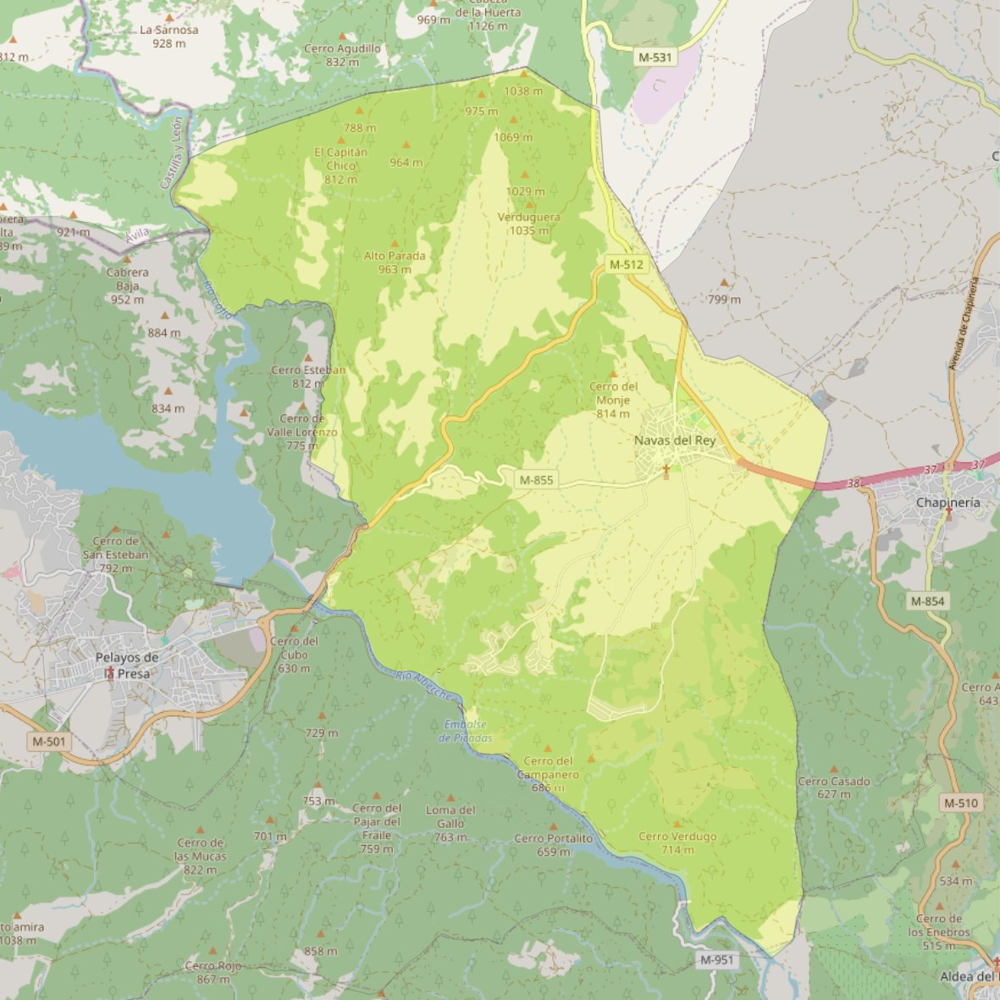

San Eugenio Obispo

- Arciprestazgo
- San Martín de Valdeiglesias
- Población
- Navas del Rey
- Dirección postal
- Pza. San Eugenio, 4
- Código postal
- 28695
- Extensión
- 50,52 km² (5.052 ha)
- Teléfono
- 918 114 161
- Correo electrónico
- saneugenioobispo-navasdelrey@diocesisgetafe.es